Double Pendulum
The double pendulum is a stiff, chaotic, two-degree-of-freedom system with dimensional parameters ($g = 9.80665$). It is generated symbolically by EulerLagrange and has no ::Type{T} constructor, so the initial conditions, timespan, timestep and parameters are built at precision T by hand. There is no closed-form solution; the reference is a Float64 Gauss(8) run. The trajectory plots use the configuration space $(\theta_1, \theta_2)$.
Short scenario (Δt = 0.01, t ≤ 10)
Energy error
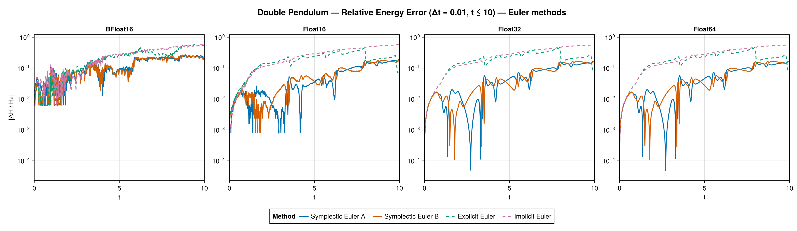
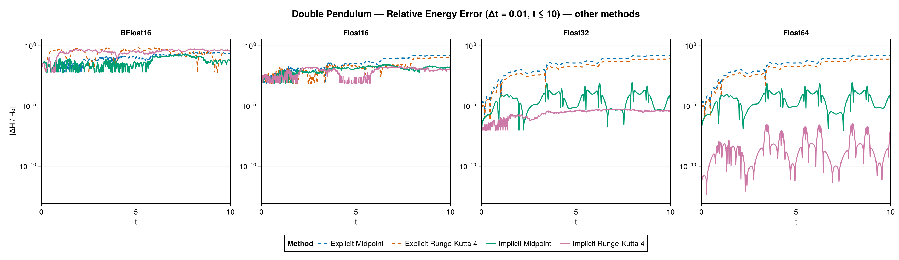
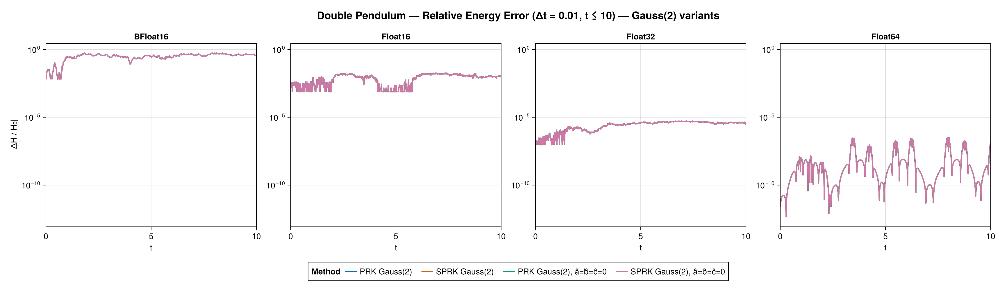
All twelve methods run at all four precisions, and the usual ordering holds — the implicit (Gauss) rules keep the energy error far below the Euler methods. The 2 × 2 group is particularly clean here at Float64: the two explicit rules both drift to order 1e-1, implicit midpoint stays around 1e-4, and implicit RK4 around 1e-10 — symplecticity setting the qualitative behaviour, the order setting the level. In the two half precisions all four collapse onto a common round-off floor (≈ 1e-1 at BFloat16, ≈ 1e-2 at Float16), so neither the order nor the symplecticity is visible: at 8–11 significand bits, arithmetic dominates the method entirely.
This is the scenario in which a global clock costs the most. On the problem's own T-typed grid the three implicit methods throw a NaN in the nonlinear-solver direction at Float16, and neither the trust-region DogLeg solver nor a MidpointExtrapolation initial guess reliably avoids it — because the obstruction is not the solver but the clock. Hermite extrapolation reads its interval off the stored history times, and Float16 resolves only about 0.004 near $t = 5$ — comparable to $\Delta t = 0.01$ — so the differenced interval, and hence the initial guess, is materially wrong. Advancing the solution step in a local time frame makes the interval exact, and every method completes at every precision.
The four partitioned-Gauss(2) variants are therefore informative at every precision. The symplectic-vs-duplicated tableau choice and the rounding-compensation coefficients $â, b̂, ĉ$ produce visibly different energy-error fine structure at Float32/Float64; in half precision the round-off floor swamps those differences.
Solution error
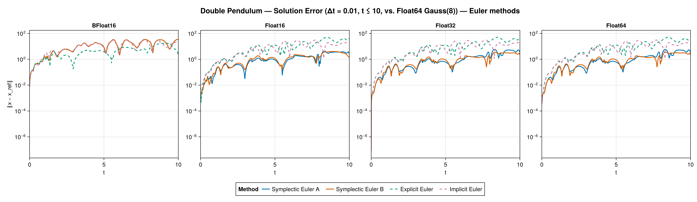
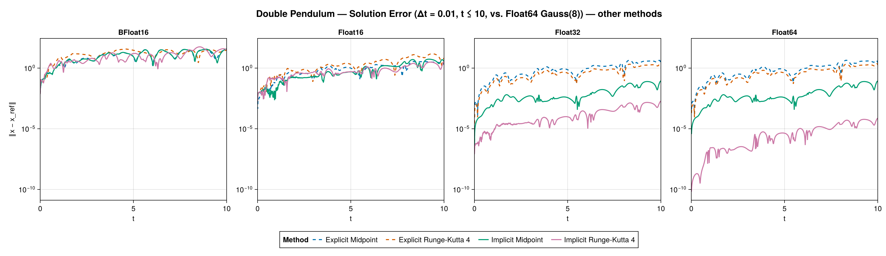
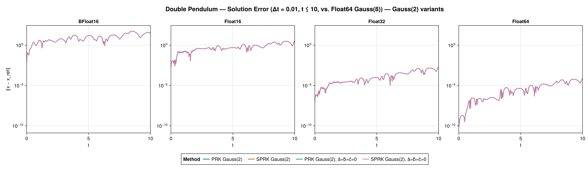
Against the Gauss(8) reference every method tracks closely until the chaotic divergence sets in, after which all trajectory errors saturate at order one. The lower the precision the earlier that happens — earliest at BFloat16, then Float16 — since a chaotic system amplifies the round-off floor exponentially. This is the mechanism by which reduced precision actually hurts here: not a failed solve, but a shorter predictability horizon.
Configuration-space trajectory
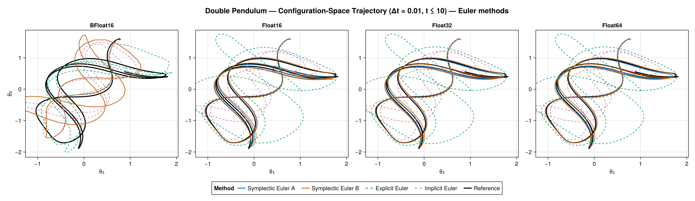
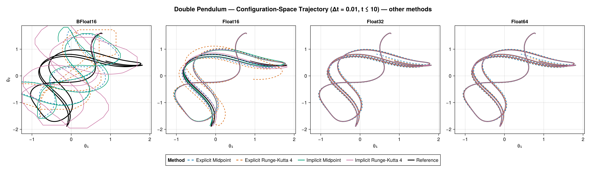
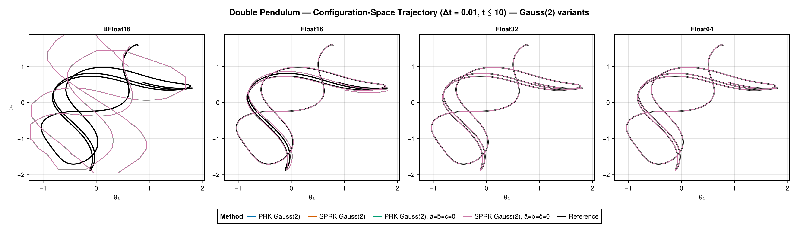
The methods track the reference until the chaotic divergence sets in, departing from it progressively earlier as the precision drops.
Coarse scenario (Δt = 0.1, t ≤ 10)
Energy error
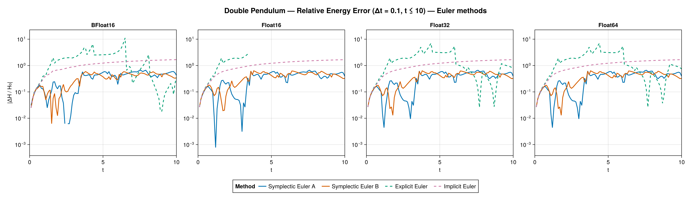
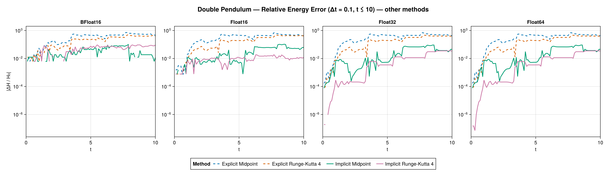
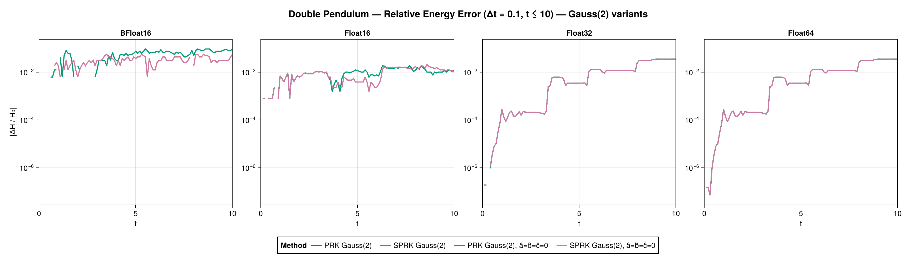
At the ten-times-coarser step Δt = 0.1 (over the same t ≤ 10 horizon as the fine run) every solve now stays stable — with the line-search Newton/Backtracking solver capped at 100 iterations, nothing trips the divergence guard. The geometric methods keep the smallest energy error: symplectic Euler A/B, the two Gauss rules and the partitioned Gauss(2) variants stay bounded around 1e-2–1e-1, while the non-geometric methods drift up toward order one (explicit Euler worst, then explicit midpoint and implicit Euler). Every method completes at every precision, which at this coarse step depends on the same clock-independence as the fine-step scenario — see Initial guess. Reduced precision merely raises the error floor; the qualitative ranking is the same at all four precisions. As always for this chaotic system the fine Δt = 0.01 run is the more informative one.
Solution error
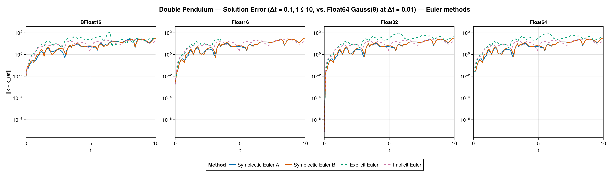
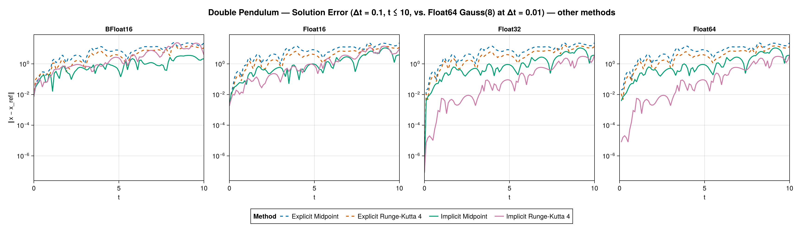
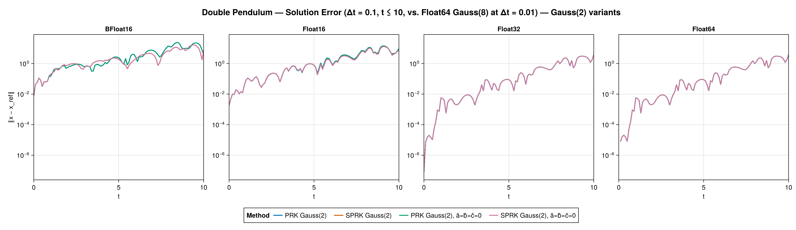
At the coarse step the trajectory error against the Gauss(8) reference grows quickly for every method as the chaotic orbits separate, with the geometric and Gauss(2) methods retaining the smallest error before the divergence dominates.
Configuration-space trajectory
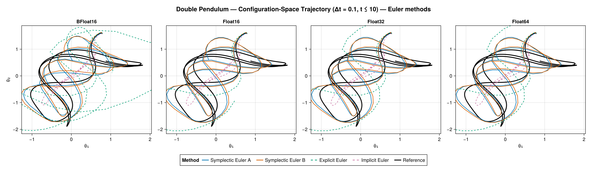
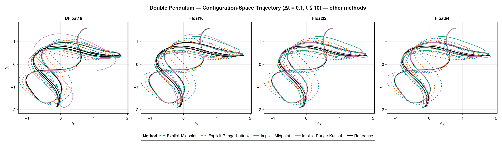
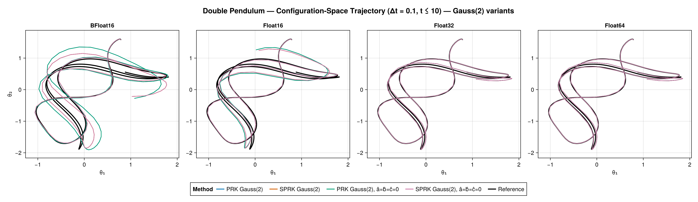